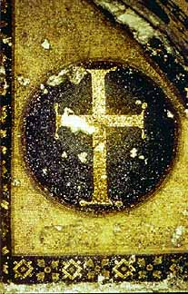
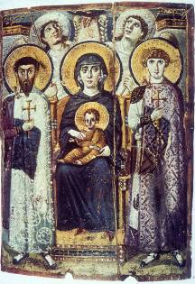

 
Proposition: Images of holy persons are incompatible with Christianity
Remember: you will be called upon to answer at least one of the items listed below as part of the debate; you may (should) also take part in the counterargument section if you have things to say that differ from what your teammates have said.
In this debate, you
will be
arguing the sides that were actually argued in the course of the
iconoclastic
controversy of the eighth and ninth centuries. Thus,
your arguments should be taken mainly from the primary
source documents; you should know what each side's theological
arguments were.
Debate:
Team 1: argue for the Proposition
Team 2: argue against the Proposition
Assigned questions - Team 1:
1. Background - What exactly is an icon? Show some examples on a powerpoint (Dr. Deliyannis has some, just ask her).
2. Background - Describe the reign of Emperor Leo III, and in particular the early events leading to the beginning of Iconoclasm.
3. Background - Who was John of Damascus? Describe his career and his writings.
4. Presentation of the proposition: what is the topic? what is the basis of your argument?
5. Arguments - select one significant argument, and explain what it means
6. Arguments - select one significant argument, and explain what it means
7. Arguments - select one significant argument, and explain what it means
8. Do the summary, summarizing your team's arguments and state why they are preferable (you can't do this ahead of time).
Assigned questions - Team 2:
1. Background - Describe the Empress Irene's career, and her role in the iconoclastic controversy.
2. Background - Explain the seventh ecumenical council, who participated, what it did.
3. Background - Explain the second phase of Iconoclasm (815-843), and how and why it ended.
4. Presentation of the proposition: what is the topic? what is the basis of your argument?
5. Arguments - select one significant argument, and explain what it means
6. Arguments - select one significant argument, and explain what it means
7. Arguments - select one significant argument, and explain what it means
8. Do the summary, summarizing your team's arguments and state why they are preferable (you can't do this ahead of time).
Primary source evidence
Summaries of the decrees of the iconoclast Council of Constantinople of 754, and the Council of Nicaea of 787 (the seventh ecumenical council), can be found at: https://dmdhist.github.io/iconoclasmcouncils.html
John of Damascus was one of the leading theologians who defended icons; his complete apologia against iconoclasts can be found at: http://www.fordham.edu/halsall/basis/johndamascus-images.asp
Links to information on Iconoclasm
One of the best introductions to Iconoclasm in a scholarly article, albeit with a particular interpretative bent, is by Peter Brown, "A Dark-Age Crisis: Aspects of the Iconoclastic Controversy," English Historical Review 88 (1973): 1-34, which can be found online at at JSTOR.
Here is a brief introduction to icons at the Metropolitan Museum of Art's website: http://www.metmuseum.org/toah/hd/icon/hd_icon.htm